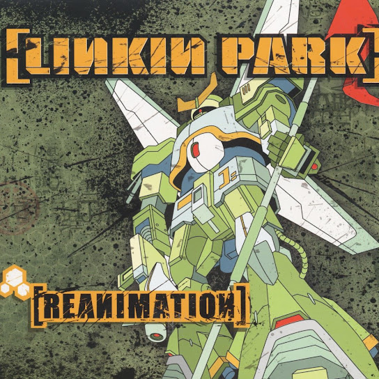

Discografía
Estos son algunos de los álbumes más representativos de esta banda, con enlace directo a YouTube para escuchar el disco completo.
Álbumes Destacados

nombre de disco (fecha)
El album mas querido de la banda, iconico, clasico e historico.
Escuchar en YouTube
Meteora (2003)
El segundo album de la banda iconico por tener canciones como "Faint" y "Breaking The Habit".
Escuchar en YouTube

Reanimator (2004)
tercer album de la banda, que aunque no es tan recordado como los dos primeros, los fanaticos le tienen un gran cariño.
Escuchar en YouTube